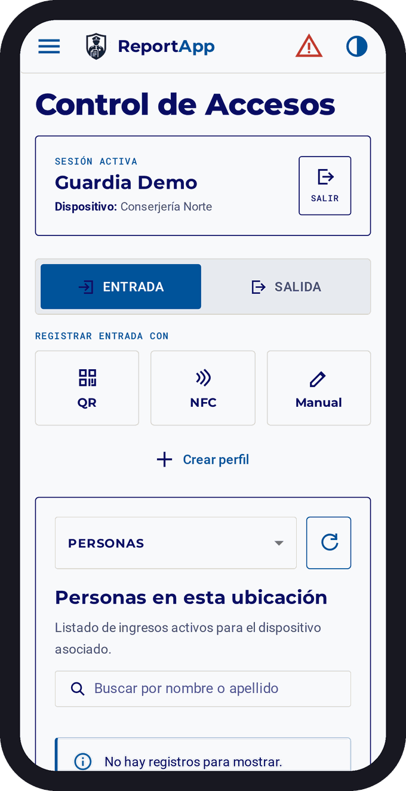
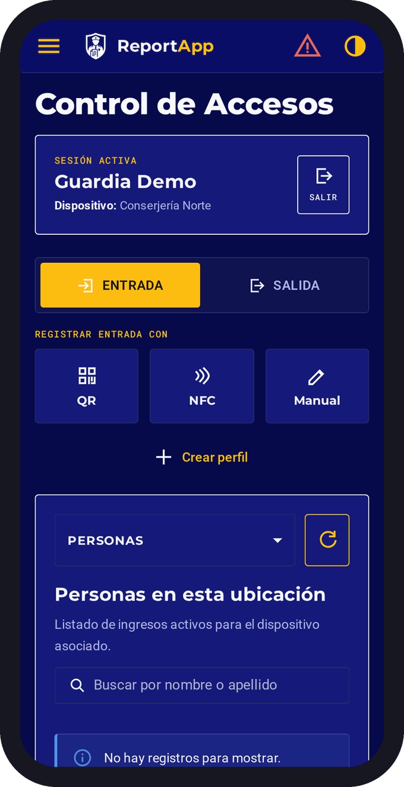

Propuesta visual original
Láminas del trabajo de diseño para ReportApp / ControlApp: la app del guardia en terreno y las interfaces en modo claro y oscuro.




Composición de pantallas de la propuesta · haz clic en las láminas para ampliarlas.